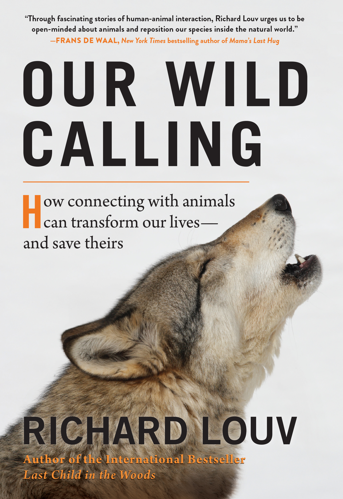

|
The Picture of Dorian Gray |
Oscar Wilde |
Oscar Wilde’s only novel is the dreamlike story of a young man who sells his soul for eternal youth
and beauty.
In this celebrated work Wilde forged a devastating portrait of the effects of evil and debauchery on
a young aesthete in late-19th-century England. Combining elements of the Gothic horror novel and
decadent French fiction, the book centers on a striking premise: As Dorian Gray sinks into a life of
crime and gross sensuality, his body retains perfect youth and vigor while his recently painted
portrait grows day by day into a hideous record of evil, which he must keep hidden from the world.
For over a century, this mesmerizing tale of horror and suspense has enjoyed wide popularity. It
ranks as one of Wilde's most important creations and among the classic achievements of its kind.
|
|  |
Our Wild Calling: How Connecting with Animals Can Transform Our Lives―and Save Theirs |
Richard Louv |
“Richard Louv has done it again. A remarkable book that will help everyone break away from their
fixed gaze at the screens that dominate our lives and remember instead that we are animals in a
world of animals.” —Bill McKibben, author of Falter
Richard Louv’s landmark book, Last Child in the Woods , inspired an international movement to
connect children and nature. Now Louv redefines the future of human-animal coexistence. Our Wild
Calling explores these powerful and mysterious bonds and how they can transform our mental,
physical, and spiritual lives, serve as an antidote to the growing epidemic of human loneliness, and
help us tap into the empathy required to preserve life on Earth. Louv interviews researchers,
theologians, wildlife experts, indigenous healers, psychologists, and others to show how people are
communicating with animals in ancient and new ways; how dogs can teach children ethical behavior;
how animal-assisted therapy may yet transform the mental health field; and what role the
human-animal relationship plays in our spiritual health. He reports on wildlife relocation and on
how the growing populations of wild species in urban areas are blurring the lines between domestic
and wild animals.
Our Wild Calling makes the case for protecting, promoting, and creating a sustainable and shared
habitat for all creatures—not out of fear, but out of love. Transformative and inspiring, this book
points us toward what we all long for in the age of real connection. |